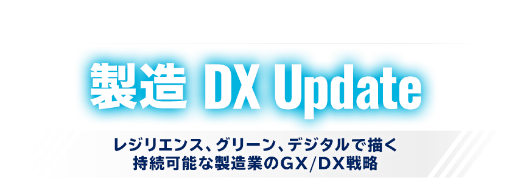

5月30日配信 お申し込み受付を
終了しました
予測不可能な環境変化に対応するために、いよいよ、ものづくりのあらゆる担い手が、新しい未来を目指さねばならない時が来ました。向かう先に見えるのは、様々な困難や変化に耐えられる、柔軟性と強靭さを兼ね備えた「レジリエント」な製造業です。
持続可能な社会を実現するために、まず取り組まなければならないのが、GX（グリーントランスフォーメーション）とDX（デジタルトランスフォーメーション）です。製造業の今後の発展は、この二つの戦略にかかっているといっても過言ではありません。
こうしたストーリーを踏まえて開催する「製造DX Update～レジリエンス、グリーン、デジタルで描く、持続可能な製造業のGX/DX戦略～」は、ものづくり企業でGX/DXの先導役を担う方々に向けたオンライン・セミナーです。
本セミナーは、技術や市場/トレンドの目利きを講師に迎え、製造業のGX/DX戦略策定に役立つ情報を提供いたします。
本セミナーはオンラインセミナー（Live配信）です。
開催概要
- 名称
- 製造DX Update
- 日程
-
2023
年
5
月
30
日（火）～
12
月
28
日（木）
※期間中の 16：00～17：00 に不定期で開催
※期間や時間は変更になる場合もございます
- 開催形式
- WEBセミナー
- 主催
- 日経クロステック
- 協賛
-
- オープンテキスト ほか
- 定員
- 200名
- 参加料
- 無料（事前登録制）
お問い合わせ
日経BP読者サービスセンターセミナー係
お問い合わせ5月30日配信 お申し込み受付を
終了しました